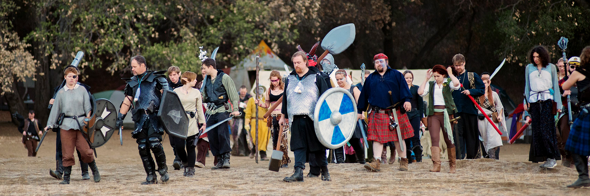
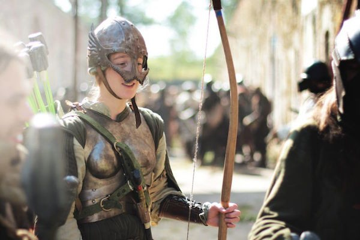

Cultural significance
Roleplaying may be seen as part of a movement in Western culture towards participatory arts, as opposed to traditional spectator arts.Participants in a LARP cast off the role of passive observer and take on new roles that are often outside of their daily life and contrary to their culture.The arrangers of a LARP and the other participants act as co-creators of the game.This collaborative process of creating shared fictional worlds may be associated with a broader burgeoning "geek" culture in developed societies that is in turn associated with prolonged education, high uptake of information technology and increased leisure time.In comparison to the mainstream video-game industry, which is highly commercialized and often marketed towards a male audience, LARP is less commoditized, and women actively contribute as authors and participants.

LARP is not well known in most countries and is sometimes confused with other role-playing, reenactment, costuming, or dramatic activities. While fan and gamer culture in general has become increasingly mainstream in developed countries, LARP has often not achieved the same degree of cultural acceptability. This may be due to intolerance of the resemblance to childhood games of pretend, a perceived risk of over-identification with the characters, and the absence of mass marketing.In US films such as the 2006 documentary Darkon, the 2007 documentary Monster Camp, and the 2008 comedy Role Models, fantasy LARP is depicted as somewhat ridiculous and escapist, but also treated affectionately as a "constructive social outlet".In the Nordic countries, LARP has achieved a high level of public recognition and popularity. It is often shown in a positive light in mainstream media, with an emphasis on the dramatic and creative aspects.However, even in Norway, where LARP has greater recognition than in most other countries, it has still not achieved full recognition as a cultural activity by government bodies.
Communities have formed around the creation, play and discussion of LARP. These communities have developed a subculture that crosses over with role-playing, fan, reenactment, and drama subcultures.Early LARP subculture focused on Tolkien-like fantasy, but it later broadened to include appreciation of other genres, especially the horror genre with the rapid uptake of the World of Darkness setting in the 1990s.Like many subcultures, LARP groups often have a common context of shared experience, language, humour, and clothing that can be regarded by some as a lifestyle.

LARP has been a subject of academic research and theory. Much of this research originates from role-players, especially from the publications of the Nordic Knutepunkt role-playing conventions.The broader academic community has recently begun to study LARP as well, both to compare it to other media and other varieties of interactive gaming, and also to evaluate it in its own right.
It has been speculated that LARP may one day evolve into a major industry in the form of location-based games using ubiquitous computing.